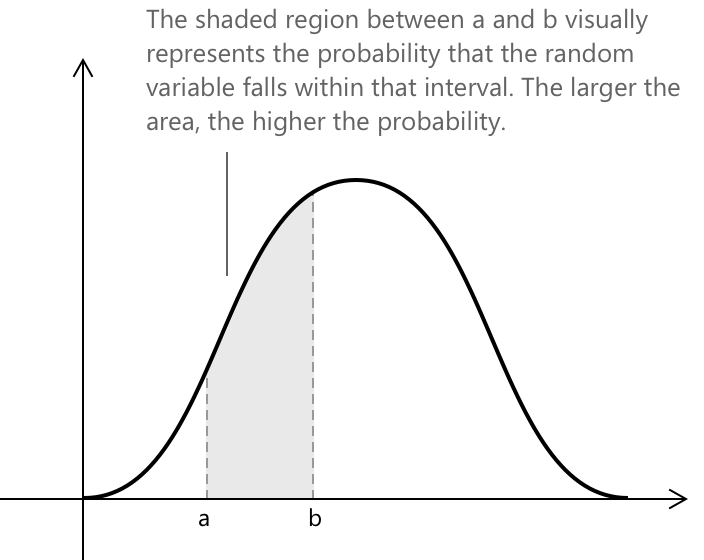

Неперервні випадкові величини
Означення неперервної випадкової величини
Неперервна випадкова величина — це функція, яка присвоює дійсне число кожному елементу неперервного простору елементарних подій. На відміну від дискретних випадкових величин, вона може набувати нескінченної кількості значень у заданому проміжку. Формально, неперервна випадкова величина — це функція:
\[ X : \Omega \to \mathbb{R} \]
де \( \Omega \) — неперервний простір елементарних подій, що складається з нескінченної кількості результатів, які можуть змінюватися плавно. У цьому випадку ймовірності присвоюються не окремим значенням, а проміжкам значень, і вони визначаються через функцію щільності ймовірності.
Неперервна випадкова величина має особливу властивість: ймовірність того, що вона набуде будь-якого точного значення, дорівнює нулю.
\[ P(X = x_0) = 0 \]
Замість цього важливою є ймовірність потрапляння величини в заданий діапазон значень. Отже, загалом, коли \( X \) є неперервною випадковою величиною, ймовірність того, що вона набуде будь-якого конкретного значення, дорівнює нулю, і ми маємо:
\[ P(a < X \le b) = P(a < X < b) + P(X = b) \]
Оскільки \(P(X = b) = 0\), ми маємо:
\[ P(a < X \le b) = P(a < X < b) \]
Це означає, що для неперервних випадкових величин точні кінцеві точки проміжку не мають значення. Ймовірність залишається такою самою незалежно від того, чи включені межі, чи ні.
Ймовірність через функцію щільності
Щоб визначити розподіл ймовірностей неперервної випадкової величини \( X \) на довільному проміжку \((a, b)\), необхідно обчислити наступний визначений інтеграл:
\[ P(a < X < b) = \int_a^b f(x)\,dx \]
Отримана ймовірність відповідає площі під кривою функції щільності ймовірності \( f(x) \) між межами \( a \) та \( b \).

Для опису неперервного розподілу ймовірностей ми використовуємо функцію щільності ймовірності \( f(x) \). Ця функція визначає, як ймовірність розподіляється по можливих значеннях випадкової величини \( X \). Функція \( f(x) \) вважається правильною щільністю ймовірності, якщо вона задовольняє наступним умовам:
\[ \begin{align} & f(x) \ge 0, \quad \text{для всіх } x \in \mathbb{R} \\[12pt] & \int_{-\infty}^{+\infty} f(x),dx = 1 \\[6pt] & P(a < X < b) = \int_a^b f(x)\,dx \end{align} \]
Ці умови гарантують, що функція щільності завжди є невипадковою (невід'ємною), що загальна ймовірність по всій прямій рівна одиниці, і що ймовірності для будь-якого проміжку можна отримати шляхом інтегрування.
На відміну від дискретних випадкових величин, які присвоюють ймовірності окремим результатам через функцію ймовірності (PMF), неперервні випадкові величини описуються функцією щільності ймовірності (PDF). У цьому випадку ймовірності прив'язані не до конкретних точок, а до площ під кривою, що представляють імовірність потрапляння величини в заданий проміжок.
Функція розподілу
Як і для дискретних випадкових величин, для неперервної випадкової величини \( X \) з функцією щільності ймовірності \( f(x) \) також можна визначити функцію розподілу \( F(x) \). Функція розподілу представляє ймовірність того, що величина \( X \) набуде значення, меншого або рівного \( x \). Формально, для величини \( X \) функція розподілу визначається як:
\[ F(x) = P(X \le x) = \int_{-\infty}^{x} f(t)\,dt \]
Вона описує, як ймовірність накопичується від лівого хвоста розподілу до точки \( x \). Розглянемо довільний проміжок \((a, b)\), як показано на попередньому рисунку; ймовірність того, що величина \( X \) набуде значення в цьому діапазоні, визначається як:
\[ P(a < X < b) = F(b) - F(a) \]
де \( F(b) \) та \( F(a) \) представляють значення функції розподілу, яка є первообразною функції щільності, обчисленими у верхній та нижній межах проміжку.
Спільна функція щільності ймовірності
У випадку двох неперервних випадкових величин \( X \) та \( Y \), ми можемо описати, як їхні ймовірності розподілені разом, за допомогою спільної функції щільності ймовірності \( f(x, y) \). Термін «спільна» вказує на те, що функція представляє комбіновану поведінку обох змінних, тобто те, як ймовірність розподіляється по різних парах значень \((x, y)\) на двовимірній площині. Це дозволяє нам вивчати зв'язок між \( X \) та \( Y \), зокрема те, чи є вони незалежними або корельованими.
Функція \( f(x, y) \) є правильною спільною функцією щільності ймовірності, якщо вона задовольняє наступні умови:
\[ \begin{align} & f(x, y) \ge 0, \forall \, (x, y) \\[12pt] & \int_{-\infty}^{+\infty} \int_{-\infty}^{+\infty} f(x, y)\,dx\,dy = 1 \\[6pt] & P\big[(X, Y) \in A\big] = \int \int_A f(x, y)\,dx\,dy \end{align} \]
Виходячи зі спільної функції щільності ймовірності \( f_{X,Y}(x, y) \), можливо визначити маргінальні розподіли \( X \) та \( Y \). У неперервному випадку ці функції описують імовірнісну поведінку кожної змінної окремо, незалежно від іншої. Іншими словами, вони представляють загальну ймовірність, отриману шляхом інтегрування по іншій змінній. Маргінальні функції щільності задаються наступним чином:
\[ \begin{align} f_X(x) &= \int_{-\infty}^{+\infty} f_{X,Y}(x, y)\,dy \\[12pt] f_Y(y) &= \int_{-\infty}^{+\infty} f_{X,Y}(x, y)\,dx \end{align} \]
де \( f_X(x) \) — маргінальна щільність \( X \), а \( f_Y(y) \) — маргінальна щільність \( Y \).
Приклад 1
Розглянемо неперервну випадкову величину \( X \), що представляє термін служби лампочки в роках. Припустимо, що її функція щільності ймовірності задана як:
\[ f(x) = \begin{cases} \lambda e^{-\lambda x} & x \ge 0 \\[6pt] 0 & x < 0 \end{cases} \]
де \( \lambda > 0 \) — стала, що визначає, наскільки швидко зменшується ймовірність. Це відомо як експоненціальний розподіл, який зазвичай використовується для моделювання часу очікування або терміну служби компонентів.
Стала \( e \approx 2.71828 \) природним чином з'являється в цьому контексті через показникову функцію. Її походження пов'язане з ідеєю границі послідовності, де вона вперше виникає як фундаментальна математична стала.
Ймовірність того, що лампочка прослужить від \( a = 1 \) до \( b = 3 \) років, отримують шляхом інтегрування функції щільності:
\[ P(1 < X < 3) = \int_1^3 \lambda e^{-\lambda x}\,dx = e^{-\lambda} - e^{-3\lambda} \]
Графічно ця ймовірність відповідає площі під кривою \( f(x) \) між \( x = 1 \) та \( x = 3 \).
Якщо, наприклад, \( \lambda = 0.5 \), тоді:
\[ P(1 < X < 3) = e^{-0.5} - e^{-1.5} \approx 0.383 \]
що означає, що існує приблизно 38% шанс того, що лампочка прослужить від одного до трьох років.
Середнє значення неперервної випадкової величини
Також для неперервних випадкових величин можливо визначити поняття середнього або математичного очікування. Воно представляє середнє значення в довгостроковій перспективі, яке набула б змінна, якби експеримент повторювався нескінченну кількість разів. Для неперервної випадкової величини \( X \) з функцією щільності ймовірності \( f(x) \) середнє значення задається як:
\[ \mu = E(X) = \int_{-\infty}^{+\infty} x f(x)\,dx \]